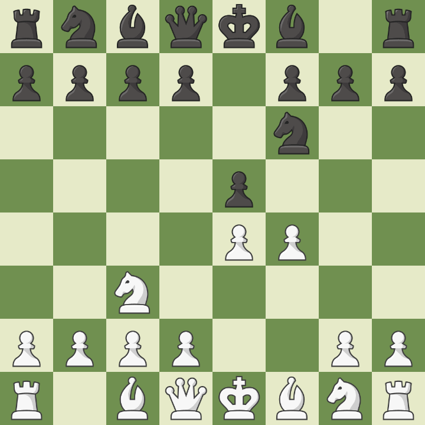
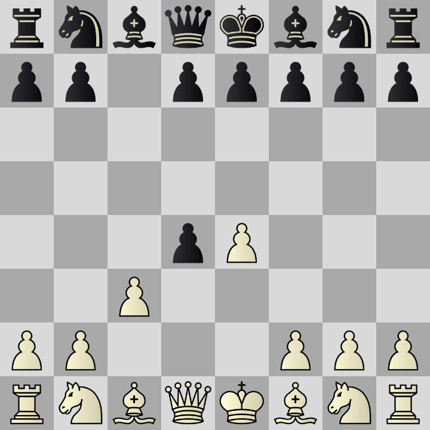
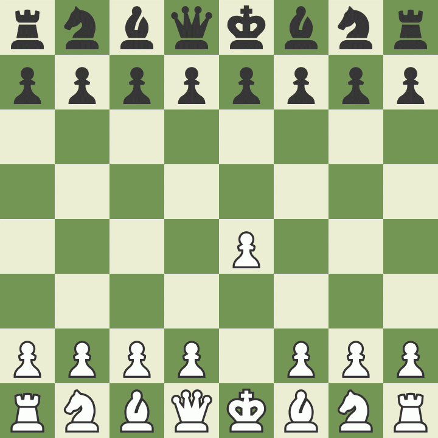
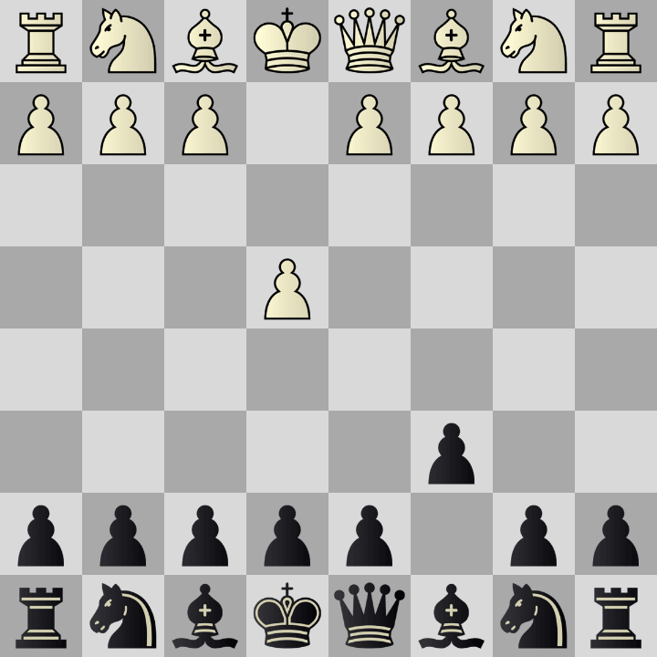
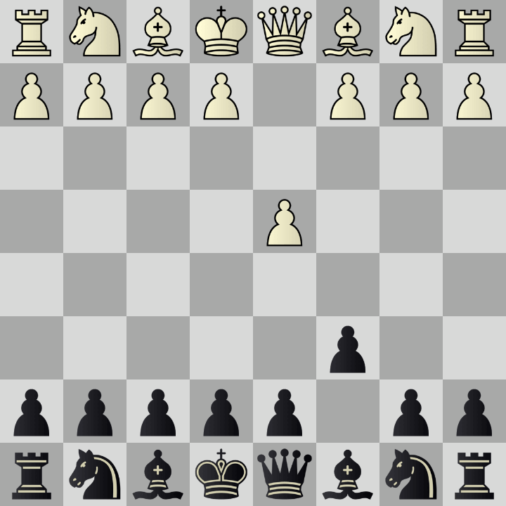

-
Gambit Viennois
f4 le gambit viennois, dans l'esprit du gambit roi mais avec un développement du cavalier en c3 au préalable, un entre deux avec la fantaisie et la créativité d'une potentielle attaque sur le roi noir, et d'un aspect un peu plus lent et positionnel en gardant un oeil sur le contrôle du centre et de l'échiquier, une sorte de gambit roi précautionneux -
Gambit Morra
1.e4 c5 2.d4 cxd4 3.c3, Le gambit Morra ou Smith-Morra est une ouverture contre la sicilienne qui consiste à sacrifier un pion pour obtenir une avance de développement et de bonnes chances d'attaque. La compensation obtenue par les blancs pour le pion d est le développement d'une pièce supplémentaire et d'un pion central après 4.Cxc3. -
CaroKann Tartakower
Jouer contre la tartakower est ce que recommende l'ordinateur et cet variante est tres dangereuse contre les débuttants mais aussi les joueurs plus avancées. -
CaroKann
La défense Caro-Kann est une ouverture aux échecs qui se caractérise par les coups 1. e4 c6. Elle fait partie des débuts semi-ouverts, où les Noirs répondent à 1. e4 autre chose que 1… e5. Elle est utilisée par les joueurs qui recherchent d'abord la sécurité, comme le conseillait le champion du monde Tigran Petrossian pour les Noirs. De fait, la défense Caro-Kann est réputée être l'une des défenses les plus solides contre 1. e4 et elle permet généralement un meilleur développement du Fou c8 que la défense française. Elle convient parfaitement aux joueurs des Noirs positionnels qui n'ont pas peur des parties nulles, à l'instar de l'ancien champion du monde Anatoli Karpov. -
Slav
Intermédiaire entre le gambit dame accepté et la défense orthodoxe du gambit dame refusé, la défense slave a connu depuis les années 1980 un renouveau spectaculaire après une longue éclipse. - haut de la page